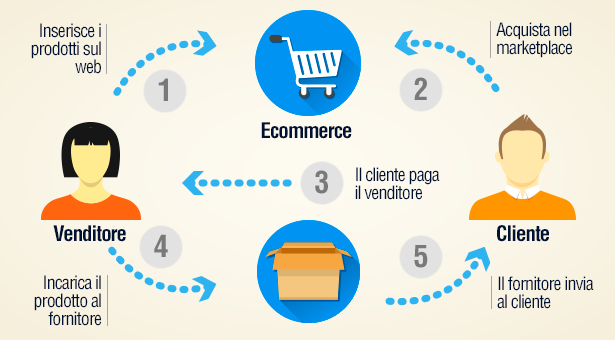

#APPROFONDIMENTI👥
⬆️📌DROPSHIPPING - Che cos'è, come funzione e perché è molto di moda?
✅ Il Dropshipping è un modello di business grazie al quale puoi realizzare vendite di prodotti fisici senza preoccuparti della produzione, senza avere la necessità di avere un magazzino e senza il bisogno di gestire le spedizione ai tuoi clienti.
Sostanzialmente questo significa che ogni volta che un tuo cliente acquista un prodotto sul tuo negozio online (o su un marketplace dove hai un account come Amazon / Ebay ) l’ordine viene trasferito direttamente al tuo fornitore in dropshipping – o dropshipper – il quale spedirà il prodotto direttamente al cliente finale al posto tuo.
✅ Il Dropshipping grazie al basso investimento iniziale e alla relativa facilità di gestione è uno dei più usati modelli di e-commerce. Tuttavia, per avviare un business online che sarà redditizio, come ogni attività richiede impegno, perseveranza e molta passione. Pur non necessitando di un grande investimento in denaro, richiede tempo per valorizzare il sito e una conoscenza del settore nel quale si vuole lavorare, oltre che delle tecniche di marketing più adatte: richiede un ottimo lavoro SEO (legato al posizionamento organico sui motori di ricerca) e SEM (legato alla pubblicità sui motori di ricerca). Infatti un cattivo posizionamento sul web può portare vendite ridotte. Sia la SEO che la SEM richiedono budget e dedizione per portare visibilità al tuo sito Internet.
✅ Di seguito alcuni vantaggi del Dropshipping:
- Non devi effettuare un forte investimento iniziale per la creazione del tuo business.
- Non devi sostenere costi per la produzione dei prodotti.
- Non devi sostenere costi per il magazzino.
- Non devi sostenere costi per la distribuzione.
- Non devi sostenere costi per il personale.
Tutti questi costi che restano in capo al produttore.
✅ Di seguito alcuni svantaggi del Dropshipping:
- È difficile trovare aziende di dropshipping certificate ed è quasi impossibile cercare su Internet "dropshipper" senza imbattersi in centinaia di truffatori e intermediari.
- La maggior parte dei risultati che troverai online sono aziende che dichiarano di essere dropshipper ma non sono neanche lontanamente all'altezza della qualità e dei prezzi ottenuti lavorando con dropshipper originali.
- I dropshipper certificati non addebitano costi di configurazione o canoni mensili. Quindi, mentre esegui la tua ricerca, se ti imbatti in una società che afferma di essere un "dropshipper" o di avere siti Web di drop ship e chiede una tariffa di installazione, una tariffa mensile o una tariffa annuale, questo è un segnale rosso immediato.
- Hai necessità di avere la partita iva.
✅ Per aggirare queste difficoltà, esistono però delle piattaforme che che fanno da tramite tra il tuo negozio e-commerce ed il fornitore. Di seguito alcune di esse:
✅ Andando ad analizzare una delle più conosciute ed utilizzate, possiamo vedere che OBERLO non è una piattaforma di e-commerce completa, ma piuttosto un'estensione che puoi installare su dei siti creati con SHOPIFY. Creato per aiutare le persone ad accedere all'ambiente e-commerce nel modo più rapido ed economico possibile.
✅ Con Oberlo, puoi esportare prodotti da AliExpress e siti simili direttamente sul tuo Shopify memorizzarli. L'obiettivo è importare rapidamente i prodotti in dropship e spedendo i prodotti ai vostri clienti mentre si è seduti comodamente a casa.
✅ Sebbene Oberlo sia disponibile in tutto il mondo, vale la pena notare che funziona esclusivamente con Shopify I negozi. Se desideri gestire un'attività di dropshipping con un'altra piattaforma, dovrai provare un'applicazione diversa.
✅ Tuttavia, il fatto che Oberlo funzioni solo con Shopify non sarà un grosso problema per la maggior parte delle persone. Shopify è una delle piattaforme più popolari e ricche di funzionalità per gli acquirenti di oggi. È molto più avanti di molti concorrenti ed è anche abbastanza abbordabile.
✅ Di seguito alcuni svantaggi e svantaggi di Oberlo:
Oberlo Pro 👍
- Integrazione simultanea con Shopify
- Importazione di prodotti rapida e sicura da AliExpress
- Interfaccia facile da usare con un'interfaccia intuitiva
- Esecuzione automatica dell'ordine del prodotto
- Sincronizzazione giornaliera dei prodotti
- Automazione dell'inventario e dei prezzi
- Ulteriore scalabilità per aziende in crescita
- Estensione gratuita di Chrome
- Opzioni di tracciabilità delle vendite e delle spedizioni
- Possibilità di cambiare fornitore ogni volta che lo desideri
- Opzioni di markup dei prezzi
- ePacket filtro incorporato
Contro di Oberlo 👎
- Funziona solo con Shopify
- Nessuna opzione per lavorare come servizio autonomo
- Nessuno dei prodotti viene modificato in Oberlo
- È supportato solo AliExpress
Dopo aver analizzato nel dettaglio cos'è il Dropshipping ed alcuni degli strumenti a disposizione, adesso tocca a te.
Sei pronto per iniziare a vendere? 📦
Se lo desideri, iscriviti ai mie canali social per restare aggiornato ⬇️
Social MediaInoltre se hai trovato utile ed interessante questo articolo, non esitare a condividerlo, a lasciare un tuo mi piace 👍, o seguire la mia pagina Facebook per sostenermi e continuare ad informare. Grazie anticipatamente a chi vorrà farlo.